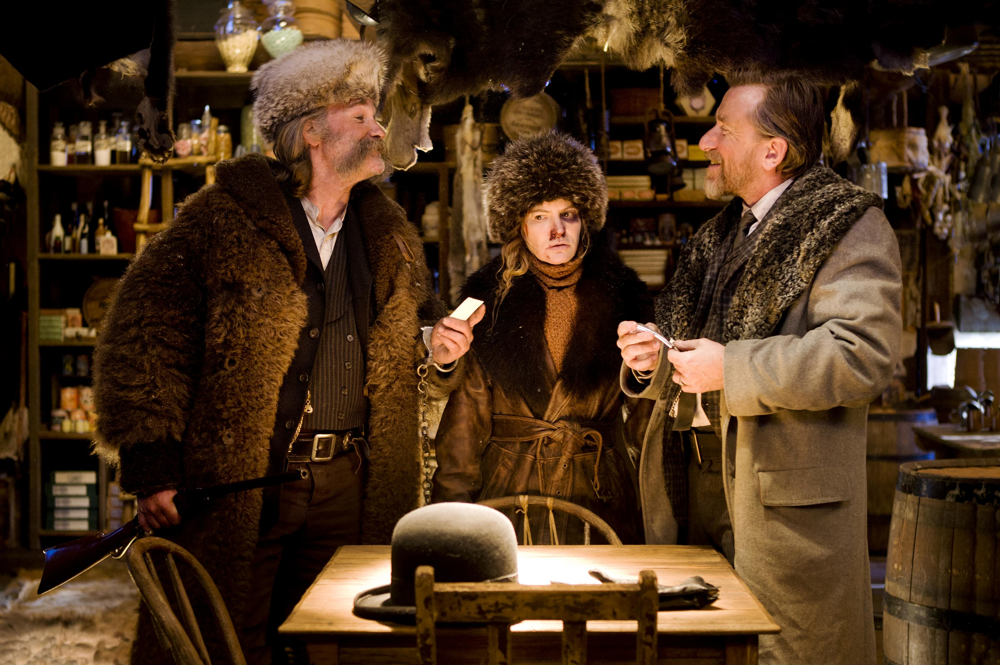

Омерзительная восьмерка
«Омерзительная восьмерка» (англ. The Hateful Eight) — американский вестерн режиссёра и сценариста Квентина Тарантино. В ролях — ансамбль актёров, во главе которого Сэмюэл Л. Джексон и Курт Рассел. Действие «Омерзительной восьмёрки» происходит вскоре после Гражданской войны в США. Герои фильма, охотники за головами и их случайные соседи, вынуждены пережидать зимнюю бурю на постоялом дворе. Фильм, анонсированный осенью 2013 года, изначально задумывался как продолжение предыдущей работы Тарантино, вестерна «Джанго освобождённый». В 2014 году Тарантино отменил проект после того, как сценарий «Омерзительной восьмёрки» был без его ведома опубликован в интернете, однако позже он возобновил работу над фильмом. Ограниченный релиз фильма в североамериканском прокате был намечен на 25 декабря 2015 года — картина демонстрировалась в формате 70 мм на 100 площадках. В широкий прокат фильм вышел 1 января 2016 года. Фильм был удостоен премии «Оскар», BAFTA и «Золотой глобус» за музыку Эннио Морриконе.

Действие фильма разворачивается в горах Вайоминга спустя несколько лет после Гражданской войны. Охотник за головами Джон Рут (Курт Рассел), прозванный Вешателем за то, что предпочитает доставлять преступников на виселицу живыми, а не мёртвыми, везёт на арендованном дилижансе преступницу Дейзи Домергу (Дженнифер Джейсон Ли) в городок Ред-Рок. По пути Рут встречает двоих — ещё одного охотника за головами, чернокожего отставного майора северян Маркуиса Уоррена (Сэмюэл Л. Джексон), везущего в Ред-Рок троих мертвых бандитов, и молодого южанина по имени Крис Мэнникс (Уолтон Гоггинс), который представляется Руту и Уоррену как новый шериф Ред-Рока. Рут с большим подозрением относится к попутчикам, но берёт Уоррена, потому что знает его как героя войны, переписывавшегося с самим Авраамом Линкольном и хранящего у себя одно из его писем. Криса же он берёт, потому что не хочет проблем с властями Ред-Рока, хотя и не верит в то, что тот шериф. Отношения случайных спутников осложняются также тем, что Мэнникс является бывшим солдатом Конфедерации, расистом и в недавнем прошлом активным членом отряда южан «Мародёры Мэнникса», возглавляемого в прошлом его погибшим отцом и уничтожившего немалое количество чёрных поселений — всё это обостряет и без того недружественные отношения между ним и Уорреном (умело скрывающим свои садистские наклонности и непримиримое желание убивать белых при любом удобном и возможном случае). Рут, считающий чёрных такими же людьми, как и белые, и читающий «слишком много Вашингтонских газет», открыто недолюбливает Мэнникса. Путники находят убежище на постоялом дворе — «Галантерейной Минни», где их встречает единственный работник — мексиканец Боб (Демиан Бичир), сообщающий, что хозяйка «Галантерейной» Минни и её муж Сладкий Дэйв уехали неделю назад. Внутри находятся ещё трое постояльцев — бывший генерал Конфедерации Сэнфорд Смитерс (Брюс Дерн), ковбой Джо Гейдж (Майкл Мэдсен) и палач Освальдо Мобрей (Тим Рот), также, по его словам, следующий в Ред-Рок, чтобы казнить Дейзи Домергу и убийцу предыдущего шерифа Ред-Рока. Рут с помощью Уоррена разоружает всех присутствующих, подозревая, что один из них — сообщник Дейзи, который попытается её освободить. Ситуация дополнительно накаляется из-за незабытых обид войны: генерал Смитерс и майор Уоррен сражались на разных сторонах и оба совершали военные преступления, к тому же Мэнникс обвиняет Уоррена в том, что письмо от Авраама Линкольна — фальшивка, и майор признаёт это. Рут, доверявший Уоррену и искренне уважавший его, неприятно поражён и глубоко разочарован.
На полках в лавке Минни можно заметить табак марки Red Apple («Красное яблоко») — бренда, много лет назад придуманного Тарантино в качестве протеста против рекламы в кино. Red Apple курят персонажи его фильмов «Криминальное чтиво», «Убить Билла» и «Бесславные ублюдки», а также персонажи фильмов Роберта Родригеса «От заката до рассвета» и «Планета страха». Тим Рот подтвердил в интервью, что его персонаж — «Англичанин» Пит Хикокс (Освальдо Мобрей) — является предком Арчи Хикокса, британского лейтенанта из фильма Тарантино «Бесславные ублюдки». Арчи Хикокса изначально тоже должен был играть Рот, но из-за его тогдашней занятости роль отошла Майклу Фассбендеру. Некоторые сцены перекликаются с другим фильмом с участием Курта Рассела и с музыкой Эннио Морриконе — «Нечто»; из саундтрека этого же фильма заимствованы три трека, не попавшие в оригинальный фильм.

За несколько дней до старта проката «Омерзительная восьмёрка» (в ряду других потенциальных «оскаровских» номинантов) стала жертвой пиратства — промокопия (англ.)русск. ленты, предназначавшаяся одному из руководителей компании Alcon Entertainment Эндрю Косову, оказалась в Сети и за первые сутки была скачана более полумиллиона раз. Сразу после премьеры картины команда видеопиратов Hive-CM8 принесла свои извинения Квентину Тарантино за то, что разместила его фильм «Омерзительная восьмёрка» ещё до выхода в прокат. Они заявляют, что им «очень жаль» из-за того, что они испортили премьеру. Предположительно, они хотели поделиться фильмом с теми людьми, которые «не настолько богаты», чтобы ходить в кинотеатры.